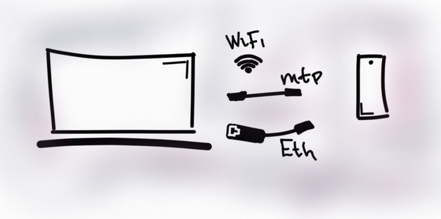
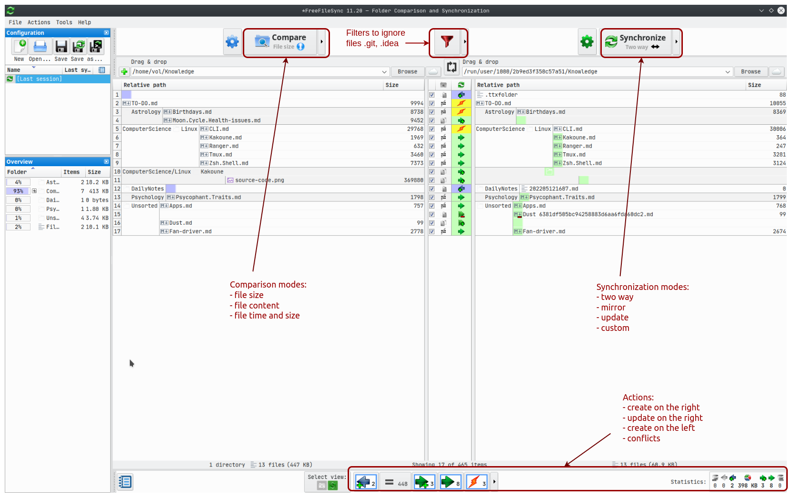
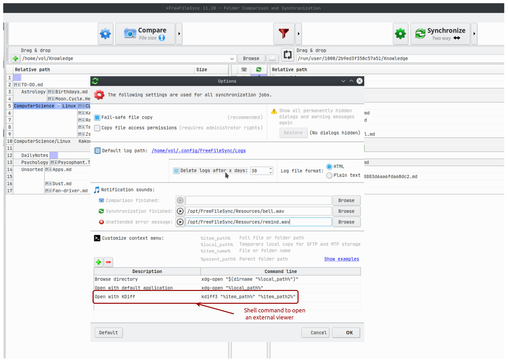
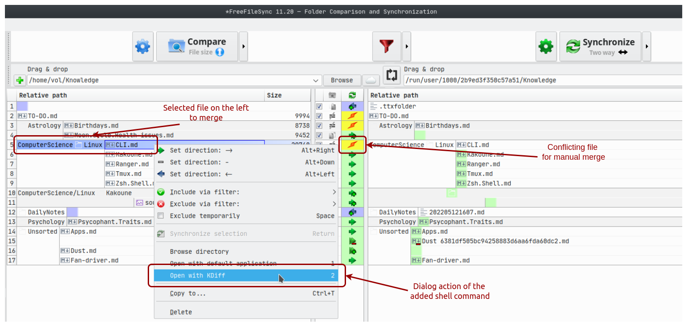
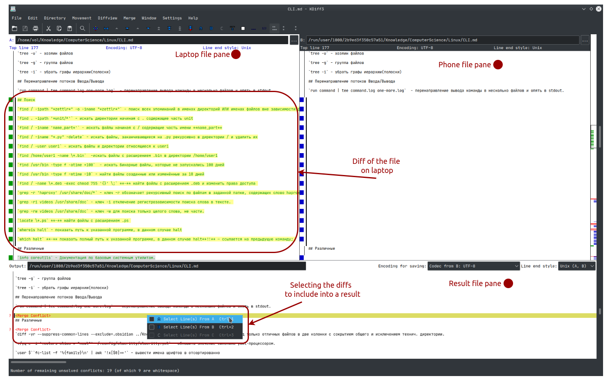
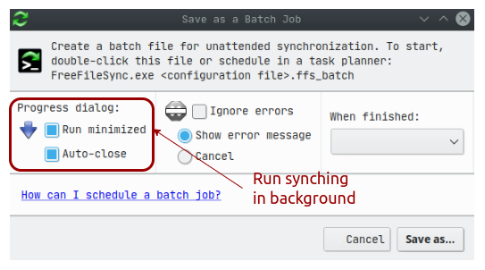

Drop a cloud disk in favor of storing data on the phone and laptop. FreeFileSync. KDiff3

Idea to exploit the laptop and phone storages instead of the Google Drive payed plan came up into my mind as i have much free space on them along with not much data in the cloud around 110Gb when laptop total space is 512Gb, phone 256Gb. Also, reducing number of nodes in network communication makes working with files more stable and convenient. On the other hand, it will bring me a few difficulties and restrictions, but what are they, will i encounter any blocks making the idea failed?
I tried to consider all the possible risks and issues of this specific case only.
Pros
- Data durability. Exploit the capabilities of hardware you own. Devices are often beside to each other.
- Data availability. In comparison to a cloud network isn't a condition. Today at least a phone is always with me therefore a cloud isn't necessarily to have.
- Data security. No potential risks that somebody from cloud's company employees or whoever has an access to sensitive data. As a good consequence encryption become optional, not mandatory.
- Saving money. In long term a cost for a payed plan is significantly big, for example 10$ * 12 month * 20 years is gonna be 2400$. Take it into consideration...
- No third party network node. Information exchange between the devices is two-ways direction only.
Cons
- Manual syncing. Not a big deal, mature software FreeFileSync, KDiff3 save my time.
- No automation. If you really need it batch jobs are provided by FreeFileSync.
- Sharing restriction. Now you can't share a link to a file but still can send it easily.
- No files history. It's worth to have but only for files are editable intensivelly, source code is tracking by git anyway.
As it seen cons are in a technical plane when pros comes from more practical, real life usage.
Manual syncing
Overview of how i drilled out and live with the approach storing data on two devices.
Establishing a connection
Foremost, the devices have to establish a connection with each other and there are number of ways to achieve it and start data exchanging. I tried three:
-
Hot Spot direct connection with KDEConnect using sshfs internally. The easiest way doesn't require even a cable but KDEConnect has to be installed on both phone and laptop.
-
USB cable through mtp protocol. Faster in theory that through wifi. The protocol has a few restrictions in file operating and a phone drive has to be mounted with additional software such as go-mtpfs.
-
OTG ethernet network card. The fastest but complicated to set up. Good to have when you sync many big files.
I ended up with hot spot as it brought me fewer technical problems than the others. Kubuntu, which i use, and Android can create a hot spot connection without installing additional software.
To figure out where an sshfs' folder is mounted the findmnt command is running:
❯ findmnt
TARGET SOURCE FSTYPE OPTIONS
/run/user/1000/2b9ed3f350c57a51 kdeconnect@192.168.241.62:/ fuse.sshfs rw,nosuid,nodev,relatime,user_id=1000,group_id=1000
Syncing in pictures
As a connection is established a folder from the phone can be found on file system and open to see a difference.
I chose to use FreeFileSync as it turned out very intuitive, detailed and functional. After comparing two folders i'm given a lot of actions where on the left is the laptop folder and on the right it's counterpart.

Merging in pictures
In cases when a file on both sides contains conflicts it has to be solved with merging and for it i use KDiff3. To make it more convenient FreeFileSync lets a user extend property dialog with running a shell command on the selected files. You can select only files you want to merge and quickly get back to a difference general view.

In the Tools -> Options window the command to run KDiff3 is added including string arguments %item_path%, %item_path2%, files on the left and right accordingly.

File with conflicts is selected and opening with KDiff3.

On the picture above the brief view of how KDiff3 works with merging. Three panes to see laptop, phone file states. The third is a merge interface with what a result you will get. After a merge is done a file can be synced overwriting it's counterpart.
Alternatives
Two other programs were pocked in terms of their capability. They are Meld, Grsync. Meld is more basic than FreeFileSync but can merge files in the same window not by external program. Grsync is simply GUI of the core Linux utility rsync, it's very powerful but complex. Setting up syncing in a way you need takes long time and many experiments.
Automatic syncing
Having manual syncing tested FreeFileSync can save the compare, filter, synchronization settings as the batch job script to run by double click or listening an event and run.
With the two ways sync mode all the added, moved files are syncing automatically in background.

Usage experience. It works simply OK
The two significant benefits i got are simplicity and money saving. To achieve it i have to pay some effort which is not that big!